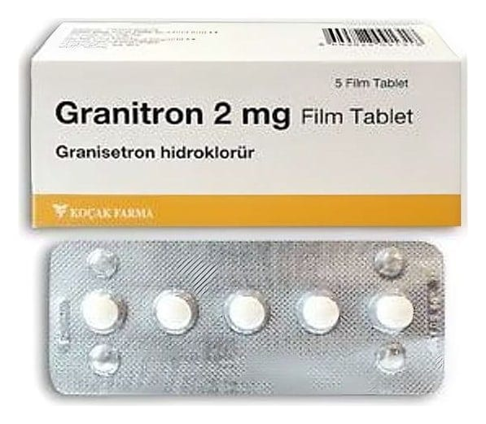

Granitron 2 mg Film Kaplı Tablet ,5 Tablet

Ne için kullanılır
KT · Bölüm 1 GRANİTRON “5-HT
reseptör antagonistleri” veya “anti-emetikler” olarak isimlendirilen ilaç grubuna dahil olan granisetron etkin maddesini içermektedir. GRANİTRON’da yardımcı madde olarak bulunan laktoz monohidrat sığır kaynaklıdır.
GRANİTRON ilaç veya ışın ile yapılan kanser tedavilerden kaynaklanan bulantı ve kusmanın (kendini kötü ve hasta hissetme) önlenmesinde kullanılmaktadır.